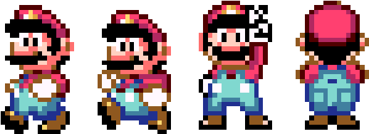
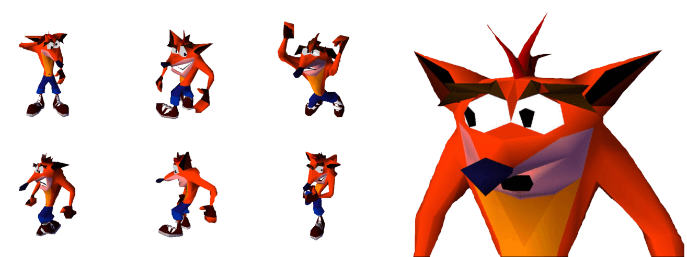
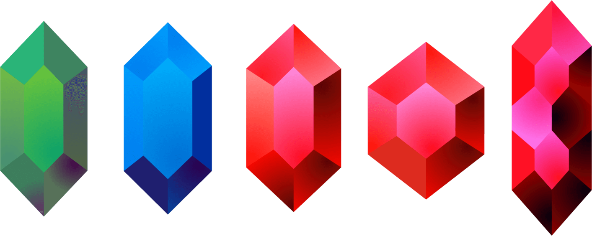
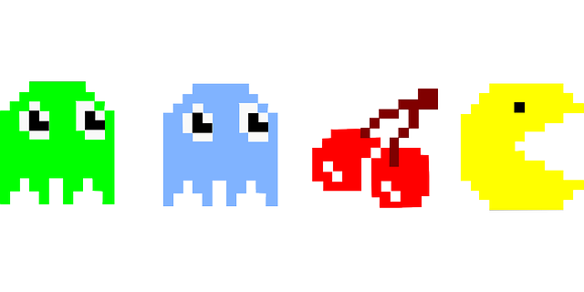
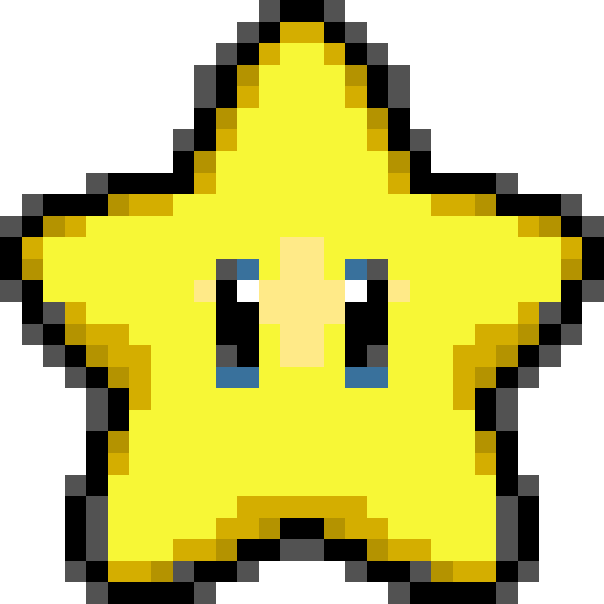
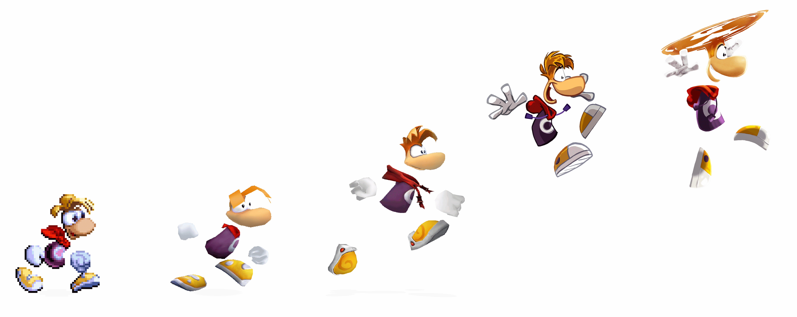
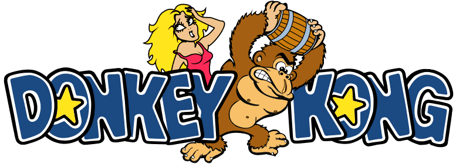

Marios oprindelige navn er "Jump Man" fra hans debut i Donkey Kong(1981)
Mario har sin ikoniske hat, fordi det var for svært at animere hans hår da han blev skabt.

Crash Bandicoot(1996)
×
Did you know?
Crash Bandicoot skulle oprindeligt have været skurken, og Dr. Neo Cortex var helten. Mærkeligt!

Link(ikke Zelda! 1986)
×
You found a fun fact!
I de oprindelige spil var Link faktisk venstrehåndet, da skaberen Shigeru Miyamoto selv er venstrehåndet. Dette blev dog ændret i Wii spillet, da så det passede bedre til motion controls.

Pac-Man
×
You found a fun fact!
Pac-Man spillet blev oprindeligt kaldt "Puck Man" i Japan, grundet Pac-Mans puck-lignende form. Navnet blev dog ændret til Pac-Man i USA, fordi man var bekymret for at folk nemt kunne ændre "P" til "F" på spillemaskinerne!

Kirby(1992)
×
You found a fun fact!
Kirbys fik sin form, da han faktisk var midlertidig placeholder-figur. Han var bare en cirkel, og skaberne synes han havde sin helt egen charme, derfor den buttede figur!

Rayman(1995)
×
Did you know?
Rayman 2: The great escape blev så populært det blev udgivet på over 10 forskellige platforme!

Donkey Kong(1981)
×
Did you know?
Donkey Kong arkadespillet har haft flere kontroverser, blandt andet i 1982 hvor Billy Mitchell satte den perfekte rekord, der senere var stor tvivl om ægtheden ved og retssager til følge. Ups!

Sonic the Hedgehog(1991)
×
Did you know?
Sonics oprindelige navn var "Mr. Needlemouse"... Måske meget godt de ændrede det til sonic.